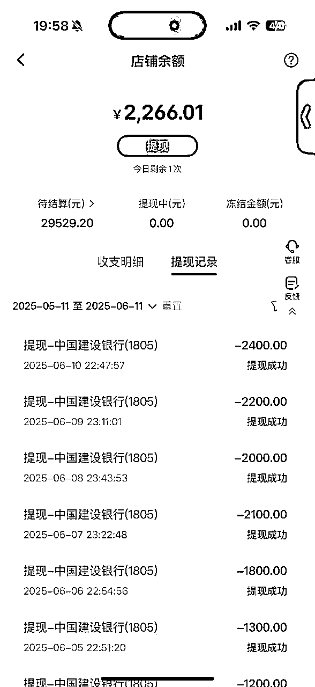
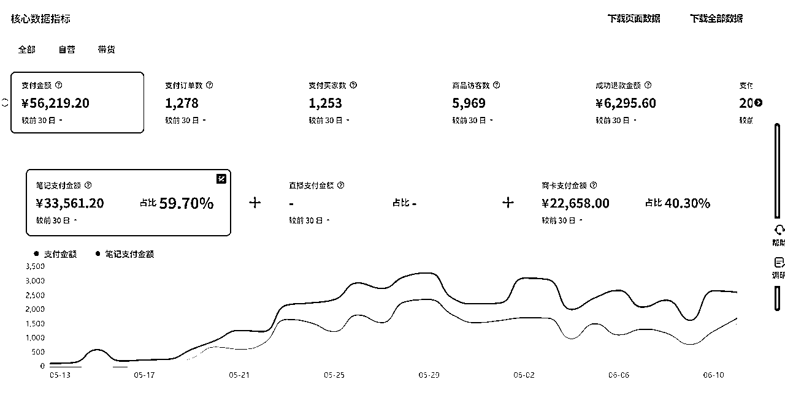
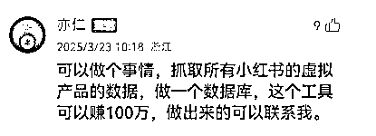
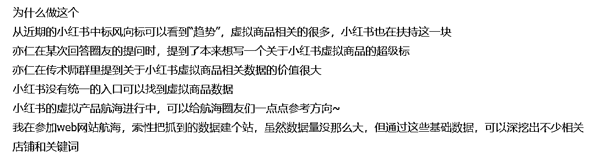
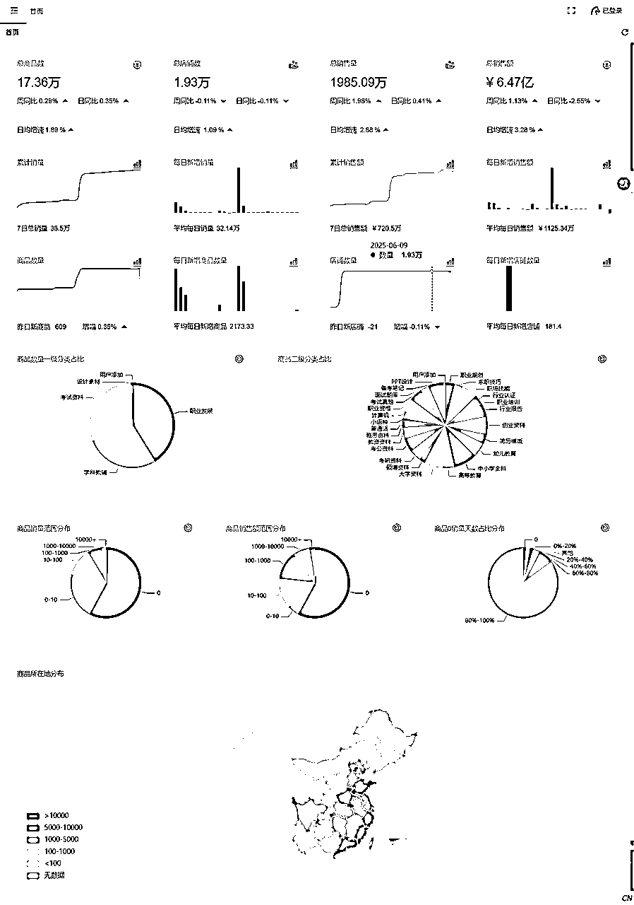
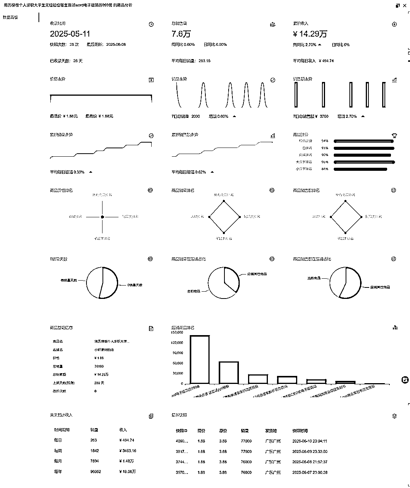
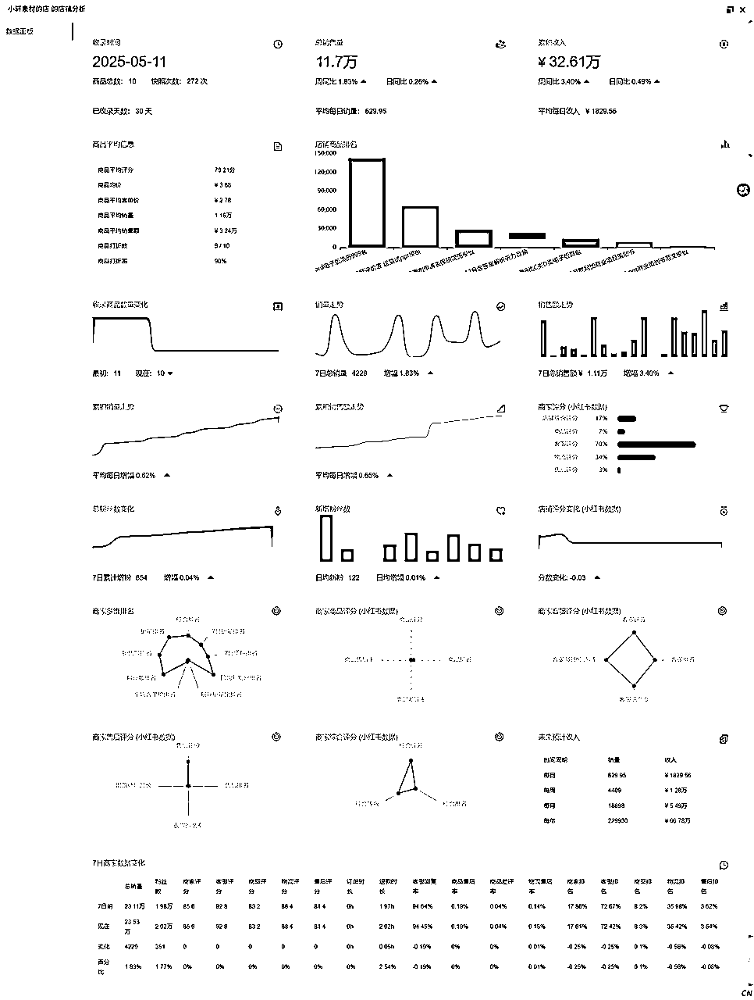
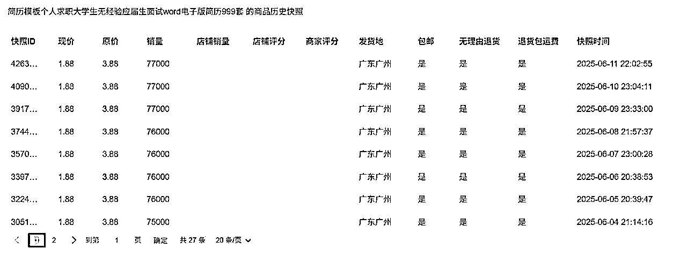
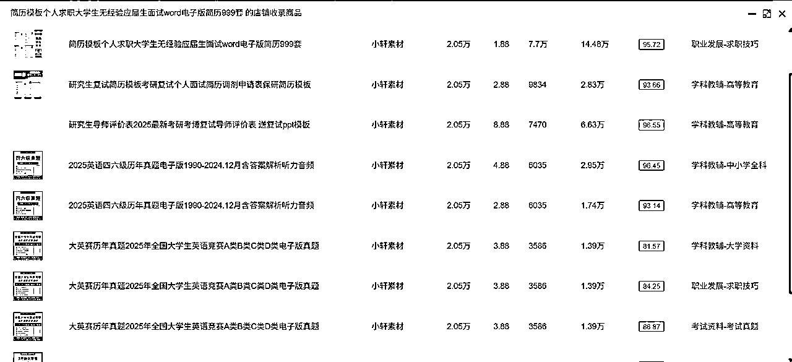
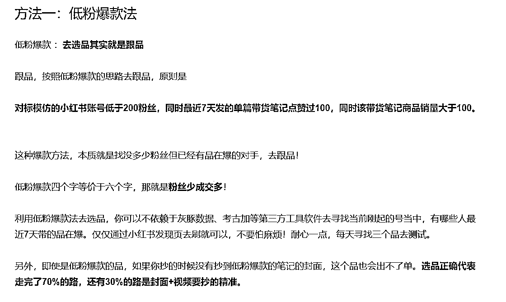

来源：https://htw0q56th7.feishu.cn/docx/PqbsdVLocoqfvyxQEsrcUlm3ndE
很感谢生财有术的航海，我是2024甲辰年加入生财有术，去年一年都是潜水状态，于今年三月参加了生财有术的小红书虚拟资料航海，发现到了选品是这个项目的重中之重，结合数十年的互联网开发经验，于是做了一个爬取分析工具自用，并且从中找到了异常品爆款，拿到了比较不错的成绩。


又碰巧看到了亦仁的评论，虽然我不知道这玩意儿到底有何大用，但是这“100万”吸引到了我，其实，这个100万我不动心，我动心的第一反应是能够和亦仁链接上了，以及我想要换一个身份出现在圈友面前。正好趁着小红书虚拟资料航海又起航了，算作提供一个铲子给圈友。这个产品历经了两个半月的时间才上线，原本只是用于自己公司三月小红书虚拟资料航海选品用的一个半成品的玩意儿，没想过要做成系统性的，运营性质的产品，

我一直以来对于圈友的介绍就是：道士，比较端着的一个道士，现就任于许昌市襄城县灵泉观主持，一直在做互联网项目中的国学赛道，也接触到了非常多的朋友，接触到了非常多的项目，但是我认为这个关系并不“健康”，大多朋友都是以“尊敬”的方式带我们一起玩项目，而不是我们平等的角色，互帮互助，把我的角色设定的比较狭隘了，所以我想回到程序开发的角度去交更多的朋友，我认为这是一个契机。
如果处在开发角度保证成本的角度，我应该要审计此产品是否有价值，但是这次我忽视任何亏损点，要求团队尽所能给做出来。
有公有私：
公：给圈友提供一个铲子，提供一个工具，便于大家选品，不再迷茫，我愿附加生财的冠名，以吸纳更多的人了解生财加入生财。
私：后续附加收益如VIP，插件收益，资源互通等。
我看好小红书虚拟产品类，因为小红书虚拟产品确实有流量加持，我上架的商品没有任何笔记宣传，不到十分钟就有自然流量观看，一小时两个自然商品访客流量，这已经超越了大多电商平台。以及亦仁的“经验认知”，提到关于小红书虚拟商品相关数据的价值很大。这一点和圈友@Rand0mWalk，不谋而合。

在此过程中，我看到了有两个圈友做了类似的网站，第一时间我是着急的心态，催促我们的开发部门尽快完成开发，然而看着他们的数据量并没有快速的提升，我反倒要求放慢了脚步，想要打磨一个更精美更完善的产品给圈友分享出来（右键发现新大陆）。
这一次耽误时间主要的原因是考虑的是风险问题，因为爬虫是违法的，如果我用py或者别的语言去爬取的话，速度是相当快的，在这一个月的时间当中，我用了N个另类的，原始的，low的方法去实现，最终获取到了一个方案，虽然在常人眼中可能难以理解，不过可以确认的是我抓取的数据是完全合法化的“人工模拟”的方式进行了，当然不是coze，影刀这种“低效率”的模拟，目前我测试的多设备20分钟能出5W条数据，当然我后期跑环境的时候不会做这个大的数量去更新，第一没必要，第二，网站硬盘带宽运维成本也顶不住。
接下来介绍网站产品功能项，它现在只是0.1版本，距离我想要的还远远不止，所以需要大家的共创，我后期会加入VIP的功能以区分功能项，前期使用无任何限制，以及对于提出优化意见，功能建设的活跃圈友也会提供相应奖励，话休絮烦，进入整体。以下所有功能均可通过鼠标右键查看，未响应功能是没有开发完善。

（因为前端是我们的短板，所以在写页面的时候耽误了很多的时间，否则还能提早至少20天，已经找了专业的朋友帮我们重新架构设计前端，目前以此为标准介绍）
野马数据，域名:http://yemashuju.com/
这是我们的首页图表，清晰可见总商品数、总店铺数、总销售量、总销售额、累计销量、每日新增销量、累计销售额、每日新增销售额、商品数量、每日新增商品数量、店铺数量、每日新增店铺数量、商品数量一级分类占比、 商品二级分类占比、商品销量范围分布、商品销售额范围分布、商品0销量天数占比分布、商品所在地分布。
由此我们可以看到基本我们能想到的、能够站在用户的角度想到的问题都给预设上了，至于有什么大的作用就要用户自己来根据自己需求定论。

此页面为商品分析页面，我们预设字段有：收录时间、总销售量、累计收入、价格走势、销量走势、销售额走势、累计销量走势、累计销售额走势、商品评分、商品价格排名、商品销量排名、商品销售额排名、0销量天数、商品销量在店铺占比、商品销售额店铺占比、商品基础信息、店铺商品排名、未来预计收入、最新快照。

此页面为商品分析页面，我们预设字段有：收录时间、总销售量、累积收入、商品平均信息、店铺商品排名、收录商品数量变化、销量走势、销售额走势、累积销量走势、累积销售额走势、商家评分(小红书数据)、总粉丝数变化、新增粉丝数、店铺评分变化（小红书数据）、商家多维排名、商家商品评分(小红书数据)、商家客服评分(小红书数据)、商家售后评分(小红书数据)、商家综合评分(小红书数据)、未来预计收入、7日商家数据变化。
以上是主要图标数据类型占比，针对于数据的分析的一个基础功能，这部分将是开放使用。
右键发现新大陆！
网站我想有很多惊喜在内，大家可以自行研究，以及组合使用。

可以查看单个商品的历史快照（我们每天凌晨更新上一日的数据，可以精准监控到是否改价，精准销量等，因为小红书限制，超过10000的数据，不会出现明显的个位数变化，只会以1000递增）

也可以看到店铺当中所有商品的种类，以及不同的价格区分，可以做为参考抄品的选择。
期间有看到圈友@书豪，分享的低粉爆文的规则算法，也作为一个亮点进行开发。圈友@黄大路已经开发了一个rpa自动获取，大家也可以手动使用，我这边提供的是程序自动化提供，因为我给“野马数据”的角色定义是一个工具站，而非单一的数据站。

由此我们开发了监控模式，其实这个模式分为两种：
一：低粉爆文（开发中，还未上线，我们依旧用“独特”方式进行高效抓取）
二：自主监控，和圈友@大脸猫的开发逻辑一致，这一点倒不能称为借鉴，我们是早就立项，没有用开源性的方式分享，而是给综合在了“野马数据”当中。
低粉爆文模式如同书豪的做法，每时每刻会进行随机抓取“异常值”数据进行分享，用户自行了解剖析使用。
自主监控模式由用户提供小红书链接，每日凌晨数据更新前一日快照，进行数据清洗整理，个人分析使用。
收藏功能是默认和自主监控相结合的。
不止于此，如上所说只是0.1的踏出版本，功能在我眼中百分之一的完善都不够，我们还在每天至少投入8小时去完善去更新新的功能，需要大家的群策群力，亦仁说的是抓取所有的小红书虚拟产品，显而易见，当下做不到，因为无论爆破还是爬虫都实现不了，唯有通过关键词搜索，所以希望大家可以提供越来越多的关键词，让程序去全自动抓取剖析。
我们正在开发补充的开发方向：
小红书下拉词：（手机、网页的下拉词，如输入“有没有”出现所有的下拉词）
一键搬家：申请官方权限中，如果不通过，将采取暴力方式，用于帮助用户相中哪个品，直接全店全品一键复制，已有方案。
商品推荐：程序自动根据数据库的商品进行获取并推荐，例如商品0销量，7天内增加到100以上的，或者商品销量每天都稳定在300以上，或者粉丝销量比很高的商品等等....
AI推荐：根据季节性或者节日性或者相关性进行只能推荐，例如高考将至推荐高考资料，情人节将至推荐情人节虚拟产品、春天到了推荐春日主题、马尔代夫最近热度高、推荐旅游攻略等，
AI自动生成笔记，矩阵养号发笔记，回评等营销动作。
自动私信，AI客服等，这些和数据并不太相关，但是我还是如上所说想要做成综合性的工具站。
需要大家的齐心共建。
如果你有更多的关于小红书的创意，请在飞书留下你的建议和优化，我们会根据难度逐步决定是否实现。
功能建议提交地址：